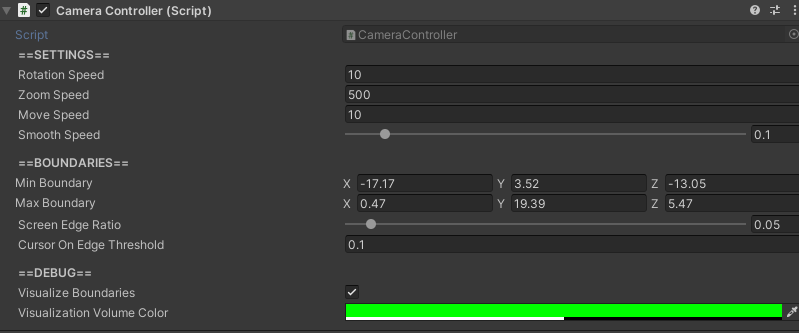

CameraController

How to Locate
The CameraController component is located on the GameObject named "Main Camera", which can be found in the hierarchy.
Settings
| Setting | Description |
|---|---|
| Rotation Speed | Speed that the camera rotates. |
| Zoom Speed | Speed that the camera zooms in and out. |
| Move Speed | Speed that the camera moves, whether via keys or the mouse cursor near the edge of the screen. |
| Min Boundary | Min coordinates of the camera boundary. When adjusting this, it is recommend to have Visualize Boundaries set to true in order to more easily define accurate camera boundaries. |
| Max Boundary | Max coordinates of the camera boundary. When adjusting this, it is recommend to have Visualize Boundaries set to true in order to more easily define accurate camera boundaries. |
| Screen Edge Ratio |
Percentage from the edge of the screen that is considered the screen's edge. For example, 0.05 would mean the screen's edge is anywhere that is 5% the width of the physical monitor screen. |
| Cursor On Edge Threshold |
Time in seconds that the mouse cursor must reside within the screen's edge for the camera to move. |
| Visualize Boundaries |
Toggles whether or not the camera's boundaries should be visualized. |
| Visualization Volume Color |
Only applicable if Visualize Boundaries is true.Color of the visualization of the camera's boundaries. |
How to Control the Camera
Moving
| Input | Effect on Camera |
|---|---|
| W | Move forward |
| S | Move backward |
| A | Move left |
| D | Move right |
The camera can also be moved by moving the mouse cursor towards the edge of the screen that corresponds with the desired direction of movement.
Rotating
| Input | Effect on Camera |
|---|---|
| Q | Rotate left |
| E | Rotate right |
Zooming
| Input | Effect on Camera |
|---|---|
| Mousewheel Scroll Up | Zoom in |
| Mousewheel Scroll Down | Zoom out |
How to Set Up Camera Boundaries
Whenever a simulation environment is created or modified, the CameraController camera boundaries must be updated to ensure the camera can view every part of the simulation environment. To do this, simply toggle Visualize Boundaries to true on the CameraController to see the current boundaries. Then, change the min and max boundary values on the x, y, and z until the boundaries match the desired volume. The GameObject the CameraController is attached to (which has the name "Main Camera") can then be moved to its desired starting location.